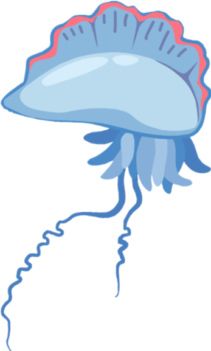

Man O’ War (PMW) Tank
A tank designed to hold a poisonous and fragile Portuguese Man O’ War (PMW)

ALEXISLIU
Man O’ War (PMW) Tank
A tank designed to hold a poisonous and fragile Portuguese Man O’ War (PMW)
To design an aquarium tank that most closely replicates the PMW’s natural habitat allow researchers to study its one full life-cycleg
Jan 2019 to current
Design Engineer
As there were little primary research, we searched the internet for experts on invertebrates and tried to find the contacts of the researchers who have tried to keep the PMW in captivitiy. After talking to a few experts, we managed to conclude that there are 2 main design requirements that determines the PMW's survival.
It must help the PMW avoid the tank walls. When the PMW hits any surfaces, it may bruise and die.
It must help the PMW avoid the tank walls. When the PMW hits any surfaces, it may bruise and die.
The intial idea consists of 5 rollers with a porous fabric wrapped around them. This provides
- Body conforming fabric
- Height change
- Assisted turning mechanism (see slide show)